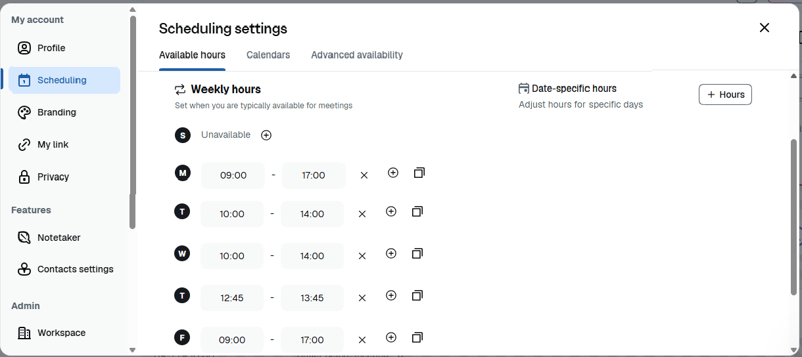
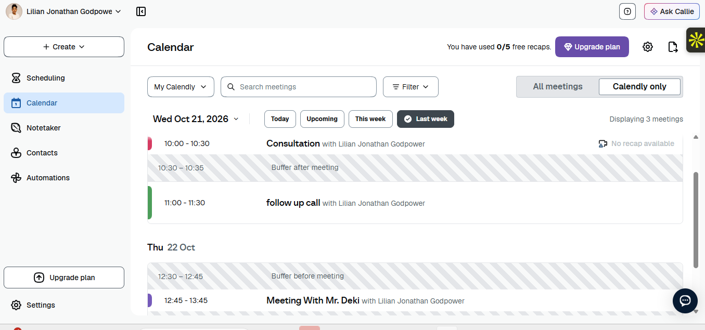
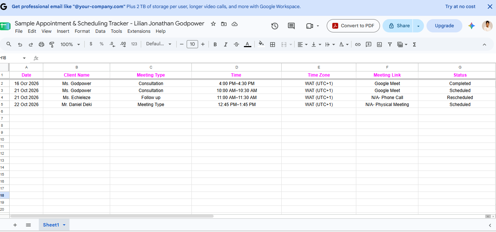
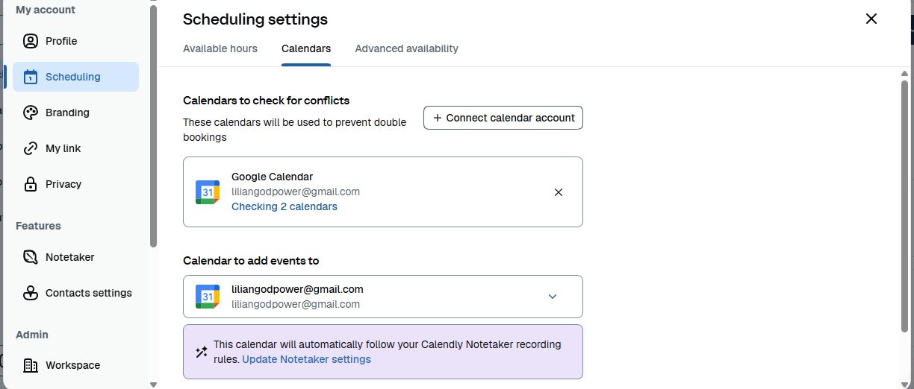

I provide reliable administrative and executive support, helping busy professionals and teams stay organised, coordinate daily operations, manage schedules, and keep important tasks on track.
I am an Administrative and Executive Virtual Assistant with a background in Public Administration and experience supporting administrative operations, Human Resources, project coordination, customer service, and business operations. I help busy executives, business owners, and teams stay organized, manage daily responsibilities, coordinate tasks, and maintain efficient workflows. I bring strong organizational skills, attention to detail, and a commitment to providing reliable administrative and executive support.
Assisting with day-to-day administrative responsibilities, organising information, maintaining records, and handling routine office tasks to help business operations run smoothly.
Scheduling appointments, managing calendar entries, coordinating availability, sending reminders, and helping prevent scheduling conflicts.
Arranging meetings, sharing meeting details, preparing agendas, recording minutes, documenting decisions, and tracking action items after meetings.
Preparing, formatting, editing, and organising professional documents, reports, meeting notes, and administrative records.
Entering and updating information in spreadsheets, maintaining organised records, checking data accuracy, and making information easy to retrieve.
Organising inboxes, sorting messages, drafting professional email responses, identifying important correspondence, and tracking follow-up messages.
Supporting project activities through task allocation, deadline tracking, progress updates, meeting scheduling, and follow-up on assigned responsibilities.
Responding to customer enquiries, providing information, maintaining customer and operational records, and supporting smooth day-to-day business activities.
View Executive Meeting Tracker
View Executive Meeting Briefing Document
A mock project demonstrating meeting tracking, preparation checklists, and executive briefing documents.A practical assignment demonstrating Calendly setup, calendar integration, appointment tracking, and reminders.




Email: liliangodpower@gmail.com
LinkedIn: View my LinkedIn profile
Location: Port Harcourt, Nigeria